유통관리사-2급 (2022-08-20 기출문제)
1과목: 유통물류일반
1. 채찍효과(bullwhip effect)를 줄일 수 있는 대안으로 가장 옳지 않은 것은?
- 지나치게 잦은 할인행사를 지양한다.
- S&OP(Sales and Operations Planning)를 활용한다.
- 공급체인에 소속된 각 주체들이 수요 정보를 공유한다.
- 항시저가정책을 활용해서 수요변동의 폭을 줄인다.
- 공급체인의 각 단계에서 독립적인 수요예측을 통해 정확성과 효율성을 높인다.
(정답률: 55%)

2. 아래 글상자의 동기부여이론을 설명하는 내용으로 가장 옳은 것은?
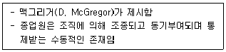
- 위생요인에 대해 설명하는 이론이다.
- 인간의 행동을 지나치게 일반화 및 단순화하고 있다는 문제가 있다.
- 고차원의 욕구가 충족되면 저차원의 욕구를 충족시키기 위해 노력한다.
- Y형 인간에 대해 기술하고 있다.
- 감독, 급료, 작업조건의 개선은 동기부여 자체와는 관련이 없다.
(정답률: 72%)
3. 기업이 물류부문의 아웃소싱을 통해 얻을 수 있는 편익에 대한 설명으로 가장 옳지 않은 것은?
- 비용 절감
- 물류서비스 수준 향상
- 외주 물류기능에 대한 통제력 강화
- 핵심부분에 대한 집중력 강화
- 물류 전문 인력 활용
(정답률: 77%)
4. 풀필먼트(fulfillment)에 대한 설명으로 가장 옳지 않은 것은?
- 판매자 입장에서 번거로운 물류에 신경쓰지 않고 기획, 마케팅 등 본업에 집중할 수 있도록 도와준다.
- 생산지에서 출발해 물류보관창고에 도착하는 구간인 last mile의 성장과 함께 부각되고 있다.
- e-commerce 시장의 성장으로 소비자들의 소비패턴이 오프라인에서 온라인으로 이동하며 급격히 발달하고 있다.
- 다품종 소량 상품, 주문 빈도가 잦은 온라인 쇼핑몰에 적합하다.
- 판매상품의 입고, 분류, 재고관리, 배송 등 고객에게까지 도착하는 전 과정을 일괄처리하는 시스템이다.
(정답률: 56%)
5. 기능식 조직(functional organization)의 단점에 대한 설명으로 가장 옳지 않은 것은?
- 명령이 통일되지 않아 전체적으로 관리가 어려워지는 경우가 있다.
- 각 관리자가 담당하는 전문적 기능에 대한 합리적인 업무분장이 실제로는 쉽지 않다.
- 책임의 소재가 불명확하고 조직의 모순은 사기를 떨어 뜨린다.
- 일의 성과에 따른 정확한 보수를 가감할 수 없다.
- 각 직원이 차지하는 직능이 지나치게 전문화되어 그 수가 많아지면 간접적 관리자가 증가되어 고정적 관리비가 증가한다.
(정답률: 39%)
6. 아래 글상자에서 JIT와 JITⅡ의 차이점에 대한 설명으로 옳지 않은 것을 모두 고르면?
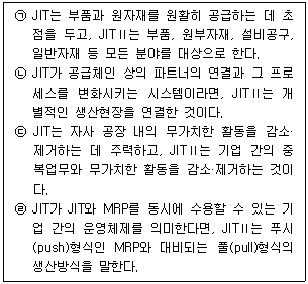
- ㉠, ㉡
- ㉠, ㉢
- ㉡, ㉣
- ㉡, ㉢
- ㉠, ㉣
(정답률: 53%)
7. 기업이 자재나 부품, 서비스를 외부에서 구매하지 않고 자체 생산하는 이유로 가장 옳지 않은 것은?
- 자신들의 특허기술 보호
- 경쟁력 있는 외부 공급자의 부재
- 적은 수량의 제품은 자체 생산을 통해 자본투자를 정당화할 수 있음
- 자사의 기존 유휴 생산능력 활용
- 리드타임, 수송 등에 대한 통제 가능성 확대
(정답률: 52%)
8. 물류영역과 관련해 고려할 사항으로 가장 옳지 않은 것은?
- 조달물류: JIT 납품
- 조달물류: 수송루트 최적화
- 판매물류: 수배송시스템화를 위한 수배송센터의 설치
- 판매물류: 공정재고의 최소화
- 반품물류: 주문예측 정밀도 향상으로 반품을 감소시키는 노력
(정답률: 43%)
9. 기업의 사회적 책임의 중요성에 대한 내용으로 가장 옳지 않은 것은?
- 기업의 사회적 책임의 중요성은 자주성의 요구에 있다.
- 기업의 사회적 책임의 중요성은 자유주의 발전에 근거를 두고 있다.
- 기업의 사회적 책임의 중요성은 기업 자체의 노력에 있다.
- 사회적 책임의 중요성 내지 필요성은 권력-책임-균형의 법칙에 있다.
- 기업의 사회적 책임은 기업이 당연히 지켜야 할 의무는 포함하지만 이익을 사회에 공유, 환원하는 것은 포함하지 않는다.
(정답률: 70%)
10. 마이클 포터(Michael E. Porter)가 제시한 5가지 세력(force)모형을 이용하여 기업을 분석할 때, 이 5가지 세력에 해당되지 않는 것은?
- 신규 진입자의 위협
- 공급자의 교섭력
- 구매자의 교섭력
- 대체재의 위협
- 보완재의 위협
(정답률: 63%)
11. 유통산업발전법(시행 2021.1.1., 법률 제17761호, 2020.12.29., 타법개정)에서 규정하고 있는 체인사업 중 아래 글상자에서 설명하고 있는 형태로 가장 옳은 것은?
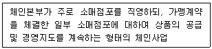
- 프랜차이즈형 체인사업
- 중소기업형 체인사업
- 임의가맹점형 체인사업
- 직영점형 체인사업
- 조합형 체인사업
(정답률: 54%)
12. 유통기업의 경로구조에 대한 설명으로 옳지 않은 것은?
- 도매상이 제조업체를 통합하는 것은 후방통합이다.
- 유통경로의 수직적 통합을 이루는 방법에는 합작투자, 컨소시엄, M&A 등이 있다.
- 기업형 수직적 경로구조를 통해 유통경로 상 통제가 가능하고 제품 생산, 유통에 있어 규모의 경제를 실현할 수 있다.
- 기업형 수직적 경로구조는 소유의 규모가 커질수록 환경변화에 신속하고 유연하게 대응할 수 있다.
- 관리형 수직적 경로구조는 독립적인 경로구성원 간의 상호 이해와 협력에 의존하고 있지만 협력을 해야만 하는 분명한 계약상의 의무는 없다.
(정답률: 49%)
13. 기업이 오프라인, 온라인, 모바일 등의 모든 채널을 연결해 고객이 마치 하나의 매장을 이용하는 것처럼 느끼도록 하는 쇼핑 시스템을 지칭하는 것으로 옳은 것은?
- Cross border trade
- Omni channel
- Multi channel
- Mass customization
- IoT
(정답률: 73%)
14. 임금을 산정하는 방법에 대한 설명으로 가장 옳은 것은?
- 근로자의 성과와 무관하게 근로시간을 기준으로 보상을 지급하는 형태는 성과급제이다.
- 근로자의 성과에 따라 보상을 지급하는 형태는 시간급제이다.
- 근로자의 입장에서는 시간당 보상액이 일정하고, 사용자 측에서는 임금산정방식이 쉬운 것은 시간급제이다.
- 작업능률을 자극할 수 있고 근로자에게 소득증대 효과가 있는 것은 시간급제이다.
- 근로자의 노력과 생산량과의 관계가 없을 때 효과적인 것은 성과급제이다.
(정답률: 76%)
15. 유통환경분석 시 고려하는 거시환경, 미시환경과 관련된 내용으로 옳지 않은 것은?
- 자본주의, 사회주의 같은 경제체제는 거시환경에 포함된다.
- 어떤 사회가 가지고 있는 문화, 가치관, 전통 등은 사회적 환경으로서 거시환경에 포함된다.
- 기업과 거래하는 협력업자는 미시환경에 포함된다.
- 기업이 따라야 할 규범, 규제, 법 등은 미시환경에 포함된다.
- 기업과 비슷한 제품을 제조하는 경쟁회사는 미시환경에 포함된다.
(정답률: 67%)
16. 기업이 사용하는 재무제표 중 손익계산서의 계정만으로 옳게 나열된 것은?
- 자산 - 부채 - 소유주 지분
- 자산 - 매출원가 - 소유주 지분
- 수익 - 매출원가 - 비용
- 수익 - 부채 - 비용
- 자산 - 부채 - 비용
(정답률: 61%)
17. 구매관리를 위해 기능의 집중화와 분권화를 비교할 때, 집중화의 장점으로 가장 옳지 않은 것은?
- 구매절차가 간단하고 신속하다.
- 주문 비용을 절감할 수 있다.
- 자금의 흐름을 통제하기 쉽다.
- 품목의 표준화가 용이하다.
- 구매의 전문화가 용이하다.
(정답률: 33%)
18. 유통의 경제적 의미에 대한 설명으로 가장 옳지 않은 것은?
- 유통을 통해 생산자는 부가가치를 더 높일 수 있고, 소비자에게는 폭넓은 선택의 기회가 주어질 수 있다.
- 유통을 통해 생산과 소비 사이에서 발생할 수 있는 괴리를 줄여서 생산과 소비를 원활하게 연결할 수 있다.
- 후기산업사회 이후 소비자들의 욕구가 다양해지면서 유통의 경제적 역할이 축소되고 있다.
- 유통산업은 신업태의 등장, 유통단계의 축소 등과 같은 유통구조 개선을 통해 국가경제에 이바지하고 있다.
- 유통은 일자리 창출에 기여하는 동시에 서비스산업 발전에 중요한 역할을 한다.
(정답률: 74%)
19. 균형성과표(BSC)에 대한 설명으로 가장 옳지 않은 것은?
- 고객 관점은 고객유지율, 반복구매율 등의 지표를 활용한다.
- 각 지표들은 전략과 긴밀하게 연계되어 상호작용을 한다.
- 조직의 지속적 생존을 위해 핵심 성공요인이 중요하다.
- 학습과 성장의 경우 미래지향적인 관점을 가진다.
- 비용이 저렴하지만 재무적 지표만을 성과관리에 적용한다는 한계를 가진다.
(정답률: 67%)
20. 종업원들이 자신과 비슷한 위치에 있는 타인과 비교하여 자기가 투입한 노력과 결과물 간의 균형을 유지하려고 하는 이론으로 가장 옳은 것은?
- 강화이론
- 공정성이론
- 기대이론
- 목표관리론
- 목표설정이론
(정답률: 54%)
21. 연간 재고유지비용과 주문비용의 합을 최소화하는 로트 크기인 경제적 주문량을 계산하는 과정에서 사용하는 가정으로 가장 옳지 않은 것은?
- 수량할인은 없다.
- 각 로트의 크기에 제약조건은 없다.
- 해당 품목의 수요가 일정하고 정확히 알려져 있다.
- 입고량은 주문량에 안전재고를 포함한 양이며 시기별로 분할입고된다.
- 리드타임과 공급에 불확실성이 없다.
(정답률: 44%)
22. 유통기업의 윤리경영에 대한 설명으로 가장 옳지 않은 것은?
- 건전하고 투명한 경영을 위해 노력한다.
- 협력사와 합리적인 상호발전을 추구한다.
- 유연하고 수직적인 임원우선의 기업문화를 조성한다.
- 고객의 만족을 위해 노력한다.
- 사회적 책임을 완수하기 위해 노력한다.
(정답률: 71%)
23. 소비자기본법(시행 2021.12.30., 법률 제17799호, 2020. 12. 29., 타법개정) 상 제8조에서 사업자가 소비자에게 제공하는 물품등으로 인한 소비자의 생명ㆍ신체 또는 재산에 대한 위해를 방지하기 위해 지켜야 할 기준을 정해야 할 주체로 옳은 것은?
- 지방자치단체
- 사업자
- 공정거래위원회
- 대통령
- 국가
(정답률: 40%)
24. 아래 글상자에서 설명하는 유통이 창출하는 소비자 효용으로 가장 옳은 것은?
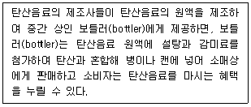
- 시간효용
- 장소효용
- 소유효용
- 형태효용
- 거래효용
(정답률: 63%)
25. 유통경로의 설계전략에 영향을 주는 시장의 특성과 관련된 설명으로 가장 옳지 않은 것은?
- 시장밀도는 지리적 영역단위 당 구매자의 수를 말한다.
- 시장지리는 생산자와 소비자 사이의 물리적인 거리 차이를 말한다.
- 제조업체가 직접 채널에 의해 커버할 시장의 크기가 큰 경우에는 많은 소비자와 직접 접촉을 해야 하기 때문에 비용이 증가한다.
- 시장밀도가 낮으면 한정된 유통시설을 이용해 많은 고객을 상대할 수 있다.
- 시장크기는 시장을 구성하는 소비자의 수에 의해 결정된다.
(정답률: 51%)
2과목: 상권분석
26. 분석대상이 되는 점포와의 거리를 기준으로 상권유형을 구분할 때 상대적으로 소비수요 흡인비율이 가장 낮은 지역을 한계상권(fringe trading area)이라고 한다. 일반적으로 한계상권은 다음 중 어느 것에 해당하는가?
- 최소수요충족거리
- 분기점상권
- 1차상권
- 2차상권
- 3차상권
(정답률: 59%)
27. 소비자들이 점포를 선택할 때 가장 가까운 점포를 선택한다는 가정을 하며, 상권경계를 결정할 때 티센다각형(thiessen polygon)을 활용하는 방법으로 가장 옳은 것은?
- 입지할당모델법
- Huff모델법
- 근접구역법
- 유사점포법
- 점포공간매출액비율법
(정답률: 49%)
28. 소비자의 점포방문동기를 개인적동기, 사회적동기, 제품구매동기로 분류할 수 있다. 이때 다른 항목들과 다른 유형의 동기로서 가장 옳은 것은?
- 사교적 경험
- 기분 전환
- 자기만족
- 역할 수행
- 새로운 추세 학습
(정답률: 35%)
29. 점포를 이용하는 고객 인터뷰를 통해 소비자의 지리적 분포를 확인할 수 있는 방법은?
- 컨버스(Converse)의 소매인력이론
- 아날로그(analog) 방법
- 허프(Huff)의 소매인력법
- 고객점표법(customer spotting technique)
- 라일리(Reilly)의 소매인력모형법
(정답률: 53%)
30. 입지 분석에 사용되는 각종 기준에 대한 내용으로 가장 옳지 않은 것은?
- 호환성: 해당점포를 다른 업종으로 쉽게 전환할 수 있는가?
- 접근성: 고객이 쉽게 점포에 접근할 수 있는가?
- 인지성: 점포의 위치를 쉽게 설명할 수 있는가?
- 확신성: 입지분석의 결과를 확실하게 믿을 수 있는가?
- 가시성: 점포를 쉽게 발견할 수 있는가?
(정답률: 48%)
31. 아래 글상자의 내용은 Huff모델을 적용하여 신규점포 입지를 분석하는 단계들이다. 일반적인 분석과정을 순서대로 나열할 때 가장 옳은 것은?
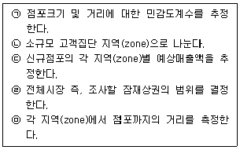
- ㉡, ㉤, ㉣, ㉠, ㉢
- ㉣, ㉢, ㉤, ㉠, ㉡
- ㉠, ㉣, ㉡, ㉤, ㉢
- ㉣, ㉡, ㉤, ㉠, ㉢
- ㉠, ㉤, ㉡, ㉢, ㉣
(정답률: 62%)
32. 점포를 개점할 경우 전략적으로 고려해야 할 사항들에 대한 설명으로 가장 옳지 않은 것은?
- 경쟁관계에 있는 다른 점포의 규모나 위치도 충분히 검토한다.
- 상품의 종류에 따라 소비자의 이동거리에 대한 저항감이 다르기 때문에 상권의 범위도 달라진다.
- 개점으로 인해 인접 주민의 민원제기나 저항이 일어날 부분이 있는지 검토한다.
- 점포의 규모를 키울수록 규모의 경제 효과는 커지기에 최대규모를 지향한다.
- 점포는 단순히 하나의 물리적 시설이 아니고 소비자들의 생활과 직결되며, 라이프스타일에도 영향을 미친다.
(정답률: 69%)
33. A시의 인구는 20만명이고 B시의 인구는 5만명이다. 두 도시 사이의 거리는 15km이다. Converse의 상권분기점 분석법을 이용할 경우 두 도시간의 상권경계는 A시로부터 얼마나 떨어진 곳에 형성되겠는가?
- 3km
- 5km
- 9km
- 10km
- 12km
(정답률: 39%)
34. 상가임대차 관계에서 권리금을 산정할 때 근거가 되는 유무형의 재산적 가치로 가장 옳지 않은 것은?
- 거래처
- 상가건물의 위치
- 영업상의 노하우
- 영업시설·비품
- 임대료 지불수단
(정답률: 50%)
35. 소매점 입지유형 가운데 아파트 단지내 상가의 일반적 특성으로 가장 옳지 않은 것은?
- 공급면적 변화가 어려워 일정한 고정고객의 확보를 통한 꾸준한 매출이 가능하다.
- 수요 공급 측면에서 아파트 단지 가구수와 가구당 상가 면적을 고려해야 한다.
- 주변지역 거주자의 상가 이용과 같은 활발한 외부 고객유입이 장점이다.
- 편의품 소매점의 경우 대형평형보다는 중형평형의 단지가 일반적으로 더 유리하다.
- 관련법규에서는 단지내 상가를 근린생활시설로 분류하여 관련내용을 규정하고 있다.
(정답률: 58%)
36. 면적 300m2인 대지에 지하2층 지상5층으로 소매점포 건물을 신축하려 한다. 층별 바닥면적은 각각 250m2로 동일하며 주차장은 지하1,2층에 각각 200m2와 지상1층 부속용도에 한하는 주차장 면적 50m2로 구성되어 있다. 이 건물의 용적률을 계산하면 얼마인가?
- 300%
- 333%
- 400%
- 416%
- 533%
(정답률: 43%)
37. 지리정보시스템(GIS)과 관련한 내용으로 가장 옳지 않은 것은?
- 주제도작성, 공간조회, 버퍼링(buffering)을 통해 효과적인 상권분석이 가능하다.
- 점포의 고객을 대상으로 gCRM을 실현하기 위한 기본적 틀을 제공할 수 있다.
- 지도레이어는 점, 선, 면을 포함하는 개별 지도형상으로 구성되며, 여러 겹의 지도레이어를 활용하여 상권의 중첩(overlay)을 표현할 수 있다.
- 지도상에서 데이터를 표현하고 특정 공간기준을 만족시키는 지도를 얻는 데이터 및 공간조회 기능이 있다.
- 위상은 어떤 지도형상, 즉 점이나 선 혹은 면으로부터 특정한 거리 이내에 포함되는 영역을 의미하며 면의 형태로 나타나 상권 혹은 영향권을 표현하는데 사용될 수 있다.
(정답률: 41%)
38. 동선과 관련한 소비자의 심리를 나타내는 대표적 원리로 가장 옳지 않은 것은?
- 최단거리실현의 법칙: 최단거리로 목적지에 가려는 심리
- 보증실현의 법칙: 먼저 득을 얻는 쪽을 선택하려는 심리
- 고차선호의 법칙: 넓고 깨끗한 곳으로 가려는 심리
- 집합의 법칙: 군중심리에 의해 사람이 모여 있는 곳에 가려는 심리
- 안전중시의 법칙: 위험하거나 모르는 길은 가려고 하지 않는 심리
(정답률: 55%)
39. 대표적인 입지조건의 하나인 고객유도시설(customer generator)은 도시형 점포, 교외형 점포, 인스토어형 점포 등 점포 유형별로 구분해서 평가한다. 일반적인 인스토어형 점포의 고객유도시설로서 가장 옳지 않은 것은?
- 주차장 출입구
- 푸드코트
- 주 출입구
- 에스컬레이터
- 간선도로
(정답률: 55%)
40. 입지적 특성에 따라 소매점포 유형을 집심성, 집재성, 산재성, 국부적집중성 점포로 구분하기도 한다. 업태와 이들 입지유형의 연결로서 가장 옳지 않은 것은?
- 백화점-집심성점포
- 화훼점-집심성점포
- 편의점-산재성점포
- 가구점-집재성점포
- 공구도매점-국부적집중성점포
(정답률: 57%)
41. 신규점포의 예상매출액을 추정할 때 활용하는 애플바움(W. Applebaum)의 유추법(analog method)에 대한 설명으로 옳지 않은 것은?
- 일관성 있는 예측이 중요하므로 소비자 특성의 지역별 차이를 고려하기보다는 동일한 방법을 적용해야 한다.
- 현재 운영 중인 상업시설 중에서 유사점포(analog store)를 선택한다.
- 과거의 경험을 계량화한 자료를 이용해 미래를 예측하지만 시장요인과 점포특성들이 끊임없이 변화하기 때문에 주관적 판단이 요구된다.
- 비교대상 점포들의 특성이 정확히 일치하는 경우를 찾기 어려울 뿐만 아니라 특정 환경변수의 영향이 동일하게 작용하지도 않기 때문에 주관적 판단이 요구된다.
- 점포의 물리적 특성, 소비자의 쇼핑패턴, 소비자의 인구통계적 특성, 경쟁상황이 분석대상과 비슷한 점포를 유사점포(analog store)로 선택하는 것이 바람직하다.
(정답률: 53%)
42. “국토의 계획 및 이용에 관한 법률” (법률 제17893호, 2021.1.12., 타법개정)에서 규정하고 있는 용도지역 중 상업지역을 구분하는 유형으로 볼 수 없는 것은?
- 중심상업지역
- 일반상업지역
- 근린상업지역
- 전용상업지역
- 유통상업지역
(정답률: 36%)
43. 중심지체계에 의한 상권유형 구분에서 전통적인 도심(CBD) 상권의 일반적 특징으로 가장 옳지 않은 것은?
- 고객흡인력이 강해 상권범위가 상대적으로 넓다.
- 교통의 결절점으로 대중교통이 편리하다.
- 전통적 도시의 경우에는 주차문제가 심각하다.
- 상대적으로 거주인구는 적고 유동인구는 많다.
- 소비자들의 평균 체류시간이 상대적으로 짧다.
(정답률: 54%)
44. 아래 글상자의 현상과 이들을 설명하는 넬슨(R. N. Nelson)의 입지원칙의 연결로서 옳은 것은?
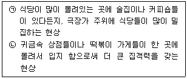
- ㉠ 동반유인 원칙, ㉡ 보충가능성 원칙
- ㉠ 고객차단 원칙, ㉡ 보충가능성 원칙
- ㉠ 보충가능성 원칙, ㉡ 점포밀집 원칙
- ㉠ 보충가능성 원칙, ㉡ 동반유인 원칙
- ㉠ 점포밀집 원칙, ㉡ 보충가능성 원칙
(정답률: 39%)
45. 제4차 산업혁명의 핵심기술 중의 하나인 빅데이터 기술이 소매 경영과 소매상권분석에 미치는 영향에 관한 설명으로서 가장 옳지 않은 것은?
- 개별적으로 상권분석 능력이 부족한 소규모 소매점포, 창업자들에게 정부 또는 각종 단체에서 빅데이터 기술에 기반한 상권분석 및 입지분석 정보를 제공함으로써 소매경영 개선을 돕는다.
- 신상품 개발이나 고객만족도 향상을 위한 소매믹스 개선에 기여할 수 있다.
- 소매상권 내에서 표적시장을 구체적으로 파악하는 데 도움을 줄 수 있다.
- 하나의 상권을 지향하는 개별점포 소유자들의 상권분석에 필수 도구이지만 복수의 상권에 접근하는 체인사업에게는 효과적이지 않다.
- 히트상품 및 데드셀러(dead seller)분석을 통해 재고관리의 효율성을 높일 수 있게 한다.
(정답률: 65%)
3과목: 유통마케팅
46. 시장세분화 유형과 사용하는 변수들의 연결로서 가장 옳지 않은 것은?
- 행동분석적 세분화: 라이프스타일, 연령
- 지리적 세분화: 인구밀도, 기후
- 인구통계적 세분화: 성별, 가족규모
- 심리적 세분화: 개성, 성격
- 인구통계적 세분화: 소득, 직업
(정답률: 37%)
47. 소매점포의 공간 분류와 그 용도에 대한 연결이 가장 옳지 않은 것은?
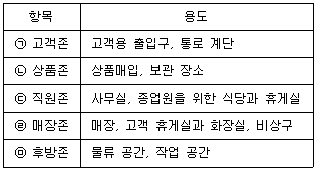
- ㉠
- ㉡
- ㉢
- ㉣
- ㉤
(정답률: 43%)
48. 지속성 상품의 경우 다음 주문이 도착하기 전에 판매 가능한 수량이 없거나 재고가 바닥이 나게 되는 최저 재고물량을 기준으로 주문점을 결정한다. 일일 예상판매량이 5개이고, 리드타임이 7일이며, 예비재고 20개를 유지하고자 할 때 주문점은 얼마인가?
- 15개
- 35개
- 55개
- 75개
- 145개
(정답률: 55%)
49. 아래 글상자에서 설명하는 용어로 옳은 것은?
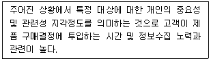
- 판매정보
- 구매동기
- 구매특성
- 지각도
- 관여도
(정답률: 37%)
50. 매장에서 비주얼 머천다이징(VMD)을 구성할 때 다양한 방법을 사용할 수 있다. 아래 글상자에서 설명하는 내용의 기법으로 가장 옳은 것은?
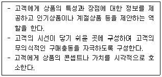
- 쇼윈도 프레젠테이션
- 파사드 프레젠테이션
- 비주얼 프레젠테이션
- 포인트 프레젠테이션
- 아이템 프레젠테이션
(정답률: 48%)
51. 촉진예산을 결정하는 방법에 대한 설명으로 가장 옳지 않은 것은?
- 가용예산법: 기업의 여유 자금에 따라 예산을 결정하는 방법
- 매출액 비율법: 과거의 매출액이나 예측된 미래의 매출액을 근거로 예산을 결정하는 방법
- 단위당 고정비용법: 고가격 제품의 촉진에 특정 비용이 수반될 때 이를 고려하여 예산을 결정하는 방법
- 경쟁 대항법: 경쟁사의 촉진 예산 규모를 기반으로 결정하는 방법
- 목표 과업법: 촉진목표를 설정하고 이를 달성하기 위한 과업을 분석하여 예산을 결정하는 방법
(정답률: 55%)
52. 아래 글상자에 설명하는 마케팅조사 기법으로 가장 옳은 것은?
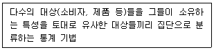
- 분산분석
- 회귀분석
- 군집분석
- t-검증
- 컨조인트분석
(정답률: 61%)
53. 세분화된 시장들 중에서 매력적인 표적시장을 선정하기 위한 고려사항으로 가장 옳지 않은 것은?
- 경쟁의 측면에서 개별 세분시장 내의 경쟁강도를 살펴보아야 한다.
- 해당 세분시장이 자사의 역량과 자원에 적합한지를 살펴보아야 한다.
- 선택할 시장들의 절대적 규모를 고려하여 살펴보아야 한다.
- 자사가 기존에 가지고 있는 마케팅 믹스체계와 일치하는지를 살펴보아야 한다.
- 선택할 시장이 자사가 가지고 있는 목표 및 이미지와 일치하는지 살펴보아야 한다.
(정답률: 51%)
54. 셀프서비스를 활용한 상품판매의 특징으로 가장 옳지 않은 것은?
- 영업시간의 유연성 증가
- 소매점의 판매비용 절감
- 고객에게 전달되는 상품정보의 정확성 향상
- 구매과정에 대한 고객의 자기통제력 향상
- 직원의 숙련도와 상관없는 비교적 균일한 서비스제공
(정답률: 54%)
55. 고객생애가치(CLV: customer lifetime value)에 대한 설명으로 가장 옳지 않은 것은?
- CLV는 어떤 고객으로부터 얻게 되는 전체 이익흐름의 현재가치를 의미한다.
- 충성도가 높은 고객은 반드시 CLV가 높다.
- CLV를 증대시키려면 고객에게 경쟁자보다 더 큰 가치를 제공해야 한다.
- CLV 관리는 단속적 거래보다는 장기적 거래관계를 통한 이익에 집중한다.
- 올바른 CLV를 정확하게 산출하려면 수입흐름 뿐만 아니라 고객획득비용이나 고객유지비용 같은 비용 흐름도 고려해야 한다.
(정답률: 57%)
56. 판매촉진 방법 가운데 프리미엄(premium)의 장점으로 가장 옳지 않은 것은?
- 지속적으로 사용해도 제품 자체 이미지에 손상을 가져 오지 않는다.
- 많은 비용을 투입하지 않으면서 신규고객을 확보하는 효과적인 방법이다.
- 제품에 별도의 매력을 부가함으로써 부족할 수 있는 상품력을 보완할 수 있다.
- 제품수준이 평준화되어 차별화가 어려운 상황에서 특히 효과적이다.
- 치열한 경쟁상황에서 제품에 대한 주목률을 높여주고 특히 구매시점에 경쟁제품보다 돋보이게 한다.
(정답률: 48%)
57. 소매점에서 제공하는 상품 관련 핵심서비스의 내용으로서 가장 옳은 것은?
- 정확한 대금 청구
- 편리한 환불 방식
- 친절한 고객 응대
- 다양한 상품 구색
- 신속한 상품 배달
(정답률: 49%)
58. 생산업체가 경로구성원들의 성과를 평가하는 기준으로서 가장 옳지 않은 것은?
- 경로구성원에 대한 투자수익률
- 유통업체의 영업에서 차지하는 자사제품 판매 비중의 변화
- 유통업체의 영업에 대한 자사 통제의 허용 정도
- 환경 변화에 대한 경로구성원의 적응력
- 경로구성원의 재고투자이익률
(정답률: 24%)
59. 단수가격설정정책(odd pricing)에 대한 설명으로 옳은 것은?
- 최대한 인하된 상품 가격이라는 인상을 주어 판매량을 증가시키기 위해 가격을 990원, 1,990원처럼 설정하는 것을 말한다.
- 가격이 높을수록 우수한 품질이나 높은 지위를 상징하는 경우에 주로 사용된다.
- 캔음료나 껌처럼 오랫동안 같은 가격을 지속적으로 유지함으로써 소비자가 그 가격을 당연하게 받아들이는 것을 말한다.
- 같은 계열에 속하는 몇 개의 제품 가격을 품질에 따라 1만원, 3만원, 5만원 등으로 설정하는 것을 말한다.
- 고객을 모으기 위해서 특정 제품을 아주 저렴한 가격으로 판매하는 방법이다.
(정답률: 55%)
60. 고객 서비스는 사전적 고객 서비스, 현장에서의 고객서비스, 사후적 고객 서비스로 구분해볼 수 있다. 다음 중 사전적 고객 서비스 요소로 가장 옳은 것은?
- 자사의 경영철학에 따라 서비스에 관한 표준을 정하고 조직을 편성하여 교육 및 훈련한다.
- 구매계획이나 공급 여력 등에 따라 발생할지 모르는 재고품절을 방지하기 위해 적정 재고수준을 유지한다.
- 고객의 주문 상황이나 기호에 맞는 상품의 주문을 위한 정보시스템을 효율적으로 관리·운영한다.
- 고객의 상품 주문에서부터 상품 인도에 이르기까지 적절한 물류서비스를 공급한다.
- 폭넓은 소비자 선택을 보장하기 위해 가능한 범위 내에서 다양한 상품을 진열하고 판매한다.
(정답률: 42%)
61. 아래 글상자의 사례들에 해당하는 유통경쟁전략으로 가장 옳은 것은?
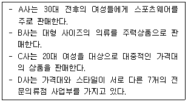
- 편의성 증대
- 정보기술의 도입 및 확대
- 점포 포지셔닝 강화
- 유통업체 브랜드의 확대
- e-커머스 확대
(정답률: 62%)
62. 과자나 라면 같은 상품들을 정돈하지 않고 뒤죽박죽으로 진열하여 소비자들에게 저렴한 특가품이라는 인상을 주려는 진열방식의 명칭으로 가장 옳은 것은?
- 돌출진열(extended display)
- 섬진열(island display)
- 점블진열(jumble display)
- 후크진열(hook display)
- 골든라인진열(golden line display)
(정답률: 59%)
63. 다음의 여러 가격결정 방법 중에서 원가중심 가격결정(cost-oriented pricing)방법에 해당하지 않는 것은?
- 원가가산법(cost plus pricing)
- 손익분기점 가격결정법(breakeven pricing)
- 목표이익 가격결정법(target-profit pricing)
- 지각가치 중심 가격결정법(perceived value pricing)
- 이폭가산법(markup pricing)
(정답률: 38%)
64. 고객관계관리(CRM)에 대한 접근방법으로 가장 옳지 않은 것은?
- 마케팅부서만이 아닌 전사적 관점에서 고객지향적인 전략적 마케팅활동을 수행한다.
- 전사적 자원관리(ERP) 시스템을 통해 고객정보를 파악하고 분석한다.
- 데이터마이닝 기법을 활용해 고객행동에 내재돼 있는 욕구(needs)를 파악한다.
- 고객과의 관계 강화를 지속적으로 모색하는 고객중심 비즈니스모델을 수립한다.
- 표적고객에 대한 고객관계 강화에 집중하며 고객점유율 향상에 중점을 둔다.
(정답률: 33%)
65. 마케팅 전략수립을 위한 다양한 조사활동 중 1차 자료를 수집하기 위한 조사방식으로 옳지 않은 것은?
- 현장조사
- 관찰조사
- 설문조사
- 문헌조사
- 실험조사
(정답률: 52%)
66. 점포의 구성 및 설계에 대한 설명으로 옳지 않은 것은?
- 포스 죠닝(POS zoning)은 판매가 이루어지는 마지막 접점이므로 최대한 고객의 체류시간을 늘려야 한다.
- 매장의 주통로는 고객의 편안한 이동을 제공하는 동시에 보조통로들과 잘 연계되게 구성해야 한다.
- 공간면적당 판매생산성 향상을 고려하여 매장 내의 유휴 공간이 없도록 레이아웃을 구성해야 한다.
- 동선 폭은 고객의 편의를 고려해 유동성과 체류시간 등의 동선 혼잡도를 예상하여 결정해야 한다.
- 표적고객을 최대한 명확하게 설정하고 상품 관련성을 고려하여 상품을 군집화한다.
(정답률: 44%)
67. 마케팅변수를 흔히 제품변수, 가격변수, 유통변수, 촉진 변수로 나누어 4P라고 한다. 다음 중 나머지와는 다른 P에 속하는 변수로서 가장 옳은 것은?
- 시장 커버리지
- 재고와 보관
- 점포 위치
- 1차 포장과 2차 포장
- 수송
(정답률: 30%)
68. 기업의 성장전략 대안들 가운데 기존시장에서 기존제품으로 점유율을 높여서 성장하려는 전략의 명칭으로 가장 옳은 것은?
- 제품개발전략
- 시장개척전략
- 시장침투전략
- 전방통합전략
- 다각화전략
(정답률: 57%)
69. 아래 글상자의 괄호 안에 들어갈 용어를 순서대로 나열한 것으로 가장 옳은 것은?
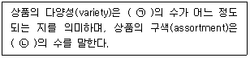
- ㉠ 상품계열, ㉡ 상품품목
- ㉠ 상품형태, ㉡ 상품지원
- ㉠ 상품품목, ㉡ 상품계열
- ㉠ 상품지원, ㉡ 상품형태
- ㉠ 상품형태, ㉡ 상품계열
(정답률: 41%)
70. 고객관계 강화 및 유지를 위한 CRM활동으로 가장 옳지 않은 것은?
- 교차판매(cross-selling)
- 상향판매(up-selling)
- 고객참여(customer involvement)
- 2차구매 유도(inducing repurchase)
- 영업자원 최적화(sales resource optimization)
(정답률: 43%)
4과목: 유통정보
71. RFID의 특징에 대한 설명으로 가장 옳지 않은 것은?
- 태그는 데이터를 저장하거나 읽어 낼 수 있어야 한다.
- 태그는 인식 방향에 관계없이 ID 및 정보 인식이 가능해야 한다.
- 태그는 직접 접촉을 하지 않아도 자료를 인식할 수 있어야 한다.
- 태그는 많은 양의 데이터를 보내고, 받을 수 있어야 한다.
- 수동형 태그는 능동형 태그에 비해 일반적으로 데이터를 보다 멀리까지 전송할 수 있다.
(정답률: 56%)
72. 의사결정시스템에 대한 설명으로 가장 옳지 않은 것은?
- 최고경영층은 주로 비구조적 의사결정에 대한 문제에 직면해 있고, 운영층은 주로 구조적 의사결정에 대한 문제에 직면해 있다.
- 의사결정지원시스템을 이용해 의사결정의 품질을 높이기 위해서는 의사결정지원시스템에서 활용하는 데이터의 품질을 개선해야 한다.
- 의사결정지원시스템은 수요 예측 문제, 민감도 분석 등에 활용된다.
- 운영층은 주로 의사결정지원시스템을 이용해 마케팅 계획 설계, 예산 수립 계획 등과 같은 업무를 수행한다.
- 의사결정지원시스템의 의사결정 품질 개선을 위해 딥러닝(deep learning)과 같은 고차원적 알고리즘(algorithm)이 활용된다.
(정답률: 31%)
73. 소스마킹과 인스토어마킹에 관련된 설명으로 가장 옳지 않은 것은?
- 인스토어마킹은 소분포장, 진열 단계에서 마킹이 이루어진다.
- 소스마킹은 생산 및 제품 포장 단계에서 마킹이 이루어진다.
- 소스마킹은 전 세계적으로 공통 사용이 가능하다.
- 소스마킹은 과일이나 농산물에 주로 사용된다.
- 인스토어마킹은 원칙적으로 소매업체가 자유롭게 표시한다.
(정답률: 47%)
74. 바코드에 대한 설명으로 가장 옳지 않은 것은?
- 유통업체의 재고관리와 판매관리에 도움을 제공한다.
- 국가표준기관에 의해 관리되고 있다.
- 컬러 색상은 인식하지 못하고, 흑백 색상만 인식한다.
- 스캐너 또는 리더기를 이용하여 상품 관련 정보를 간편하게 읽어들일 수 있다.
- 바코드에는 국가코드, 제조업체코드, 상품품목코드 등에 대한 정보가 저장되어 있다.
(정답률: 55%)
75. 아래 글상자의 내용을 지칭하는 용어로 가장 옳은 것은?
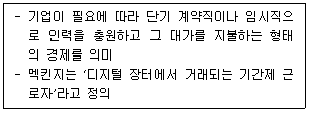
- 오프쇼어링(off-shoring)
- 커스터마이징(customizing)
- 매스커스터마이제이션(masscustomization)
- 긱 이코노미(gig economy)
- 리쇼어링(reshoring)
(정답률: 47%)
76. 아래 글상자에서 설명하는 내용을 지칭하는 용어로 가장 옳은 것은?
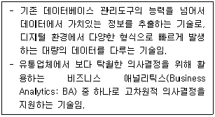
- 리포팅
- 쿼리
- 스코어카드
- 대시보드
- 빅데이터
(정답률: 57%)
77. 유통정보시스템 이용에 있어서 정보보안의 주요 목표에 대한 내용으로 가장 옳은 것은?
- 허락받지 않은 사용자가 정보를 변경해서는 안되는 것은 기밀성이다.
- 정보의 소유자가 원치 않으면 정보를 공개할 수 없는 것은 무결성이다.
- 보낸 이메일을 상대가 읽었는지 알 수 있는 수신 확인 기능은 부인방지 원칙을 잘 반영한 것이다.
- 웹사이트에 접속하려고 할 때 에러 등 서비스 장애가 일어나는 것은 무결성이 떨어진다고 볼 수 있다.
- 인터넷 거래에 필요한 공인인증서에 기록된 내용은 타인이 조작할 수 없도록 만들어 가용성을 유지해야 한다.
(정답률: 41%)
78. 유통업체에서 새로운 비즈니스 모델을 개발하고자 할 때 사용하는 비즈니스 모델 캔버스를 구성하는 요인에 대한 설명으로 가장 옳지 않은 것은?
- 유통채널이란 기업이 고객에게 가치를 전달하는 경로이다.
- 고객 세분화란 고객이 무언가를 수행하는 것을 도움으로써 가치를 창출할 수 있다는 것이다.
- 핵심자원은 기업이 비즈니스를 수행하는데 핵심이 되는 중요한 자산이다.
- 고객관계 구축이란 우량 고객과 비우량 고객을 구분하고, 차별화된 관리방안을 마련하는 것을 의미한다.
- 핵심 파트너십은 비즈니스 생태계에서 원만한 기업관계를 구축하기 위한 핵심역량을 말한다.
(정답률: 48%)
79. 스마트폰과 같은 모바일 기기를 이용하는 모바일 쇼핑의 특성으로 가장 옳지 않은 것은?
- 소비자가 직접 능동적으로 필요한 제품을 검색하여 보다 상세하게 정보를 얻을 수 있다는 장점이 있다.
- 모바일 쇼핑은 소비자가 인지-정보탐색-대안평가-구매 등의 구매의사결정을 하나의 매체에서 통합적으로 수행할 수 있는 쇼핑형태이다.
- 기업은 구매과정을 단순하고 편리하게 구성함으로써 구매단계에 대한 통합적 관리가 가능해진다.
- 쿠폰, 티켓, 상품권 등을 중심으로 형성되었던 모바일쇼핑은 의류, 패션잡화, 가전제품, 화장품, 식품, 가구 등 거의 전 부문으로 확산되고 있다.
- 모바일 쇼핑의 활성화에 따라 백화점, 대형마트, 인터넷 쇼핑 등과의 채널별 시장 경계가 명확해지면서 기존에 비해 가격경쟁은 약화되고 있다.
(정답률: 67%)
80. EDI 시스템의 사용 이점에 대한 설명으로 가장 옳지 않은 것은?
- 데이터의 입력에 소요되는 시간과 오류를 줄일 수 있다.
- 주문기입 오류로 인해 발생되는 문제점 및 지연을 없앰으로써 데이터 품질을 향상시킨다.
- 문서 관련 업무를 자동화처리함으로써 직원들은 부가가치업무에 집중할 수 있고 중요한 비즈니스 데이터를 실시간으로 추적할 수 있다.
- EDI는 세계 도처에 있는 거래 당사자와 연계를 촉진시키는 공통의 비즈니스 언어를 제공하기 때문에 새로운 영역 및 시장에 진입을 원활하게 한다.
- EDI는 전자기반 프로세스를 문서기반 프로세스로 대체함으로써 많은 비용을 절약하고 이산화탄소 배출량을 감소시켜 궁극적으로 기업의 사회적 책임을 이행하게 한다.
(정답률: 47%)
81. 고객관리를 최적화하기 위해 활용되는 비즈니스 인텔리전스(Business Intelligence: BI)에 대한 설명으로 가장 옳지 않은 것은?
- BI는 의사결정자에게 적절한 시간, 적절한 장소, 적절한 형식의 실행가능한 방식으로 정보를 제공한다.
- BI는 사물인터넷 기술을 이용해서 새로운 데이터를 수집하는 기능을 제공한다.
- BI는 데이터 마이닝이나 OLAP 등의 다양한 분석도구를 사용하여 의사결정에 필요한 정보를 제공한다.
- BI는 발생된 사건의 내부 데이터, 구조화된 데이터, 히스토리컬 데이터(historical data) 등에 대한 분석기능을 제공한다.
- BI는 분석적 도구를 활용해 경영 의사결정에 필요한 경쟁력 있는 정보와 지식을 제공한다.
(정답률: 36%)
82. 일반 상거래와 비교할 때, 전자상거래의 차별화된 특성을 설명한 것으로 가장 옳지 않은 것은?
- 고객과 대화형 비즈니스 모델로의 변이가 가능하다.
- 인터넷 비즈니스는 시간적, 공간적 제약 없이 실시간으로 운영 가능하다.
- 재고부담을 최소화하면서 기술개발과 마케팅에 더 많은 투자를 한다.
- 변화에 대한 융통성은 프로세스에 의존하기보다는 유형자산에 의존한다.
- 동시다발적 비즈니스 요소가 성립하며 포괄적 비즈니스 모델에 의한 운영이 가능하다.
(정답률: 59%)
83. 아래 글상자의 괄호 안에 들어갈 용어를 순서대로 나열한 것으로 가장 옳은 것은?
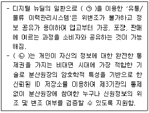
- ㉠ 블록체인, ㉡ DID(Decentralized Identity)
- ㉠ 금융권 공동인증, ㉡ OID(Open Identity)
- ㉠ 블록체인, ㉡ PID(Personality Identity)
- ㉠ 블록체인, ㉡ OID(Open Identity)
- ㉠ 공인인증, ㉡ DID(Decentralized Identity)
(정답률: 33%)
84. QR(Quick Response)에 대한 설명으로 가장 옳지 않은 것은?
- QR은 1980년대 중반 미국의 의류업계와 유통업체가 상호 협력하면서 시작되었다.
- QR의 도입으로 기업은 리드타임의 증가, 재고비용의 감소, 판매의 증진 등의 획기적인 성과를 거둘 수 있다.
- QR이 업계 전반에 걸쳐 확산되기 위해서는 유통업체마다 각각 다르게 운영되고 있는 의류상품에 대한 상품분류체계를 표준화하여야 한다.
- 미국의 식품업계는 QR에 대한 벤치마킹을 통해 식품업계에 적용할 수 있는 SCM 시스템인 ECR을 개발하였다.
- QR의 핵심은 유통업체가 제조업체에게 판매된 의류에 대한 정보를 매일 정기적으로 제공함으로써 제조업체로 하여금 판매가 부진한 상품에 대해서는 생산을 감축하고 잘 팔리는 상품의 생산에 주력할 수 있도록 하는데 있다.
(정답률: 54%)
85. 빅데이터는 다양한 유형으로 존재하는 모든 데이터가 대상이 된다. 데이터 유형과 데이터 종류, 그에 따른 수집 기술의 연결이 가장 옳지 않은 것은?
- 정형데이터 - RDB - ETL
- 정형데이터 - RDB - Open API
- 반정형데이터 - JSON - Open API
- 반정형데이터 - 이미지 - Crawling
- 비정형데이터 - 소셜데이터 - Crawling
(정답률: 36%)
86. 노나카 이쿠지로 교수가 제시한 지식변환 프로세스에서 암묵적 형태로 존재하는 지식을 형식화하여 수집 가능한 데이터로 생성시켜 공유가 가능하도록 만드는 과정을 일컫는 용어로 옳은 것은?
- 공동화(socialization)
- 지식화(intellectualization)
- 외부화(externalization)
- 내면화(internalization)
- 연결화(combination)
(정답률: 46%)
87. 고객발굴을 위해 CRM시스템의 고객정보를 활용하여 분석을 수행하고자 한다. 고객으로부터 전화문의, 인터넷 조회, 영업소 방문 등의 내용을 바탕으로 하는 분석을 지칭하는 용어로 가장 옳은 것은?
- 외부 데이터 분석
- 고객 프로필 분석
- 현재 고객 구성원 분석
- 하우스-홀딩 분석
- 인바운드 고객 분석
(정답률: 56%)
88. 공급업체와 구매업체의 재고관리 영역에서 구매업체가 가진 재고 보충에 대한 책임을 공급업체에게 이전하는 전략을 일컫는 용어로 가장 옳은 것은?
- CPP(cost per rating point)
- ASP(application service provider)
- CMI(co-managed inventory)
- ABC(activity based costing)
- VMI(vender managed inventory)
(정답률: 56%)
89. CRM시스템을 구축하는 이유에 대한 설명으로 가장 옳지 않은 것은?
- 고객과의 장기적인 관계 형성
- 거래 업무 효율화와 수익 증대
- 의사결정 향상을 위한 고객에 대한 이해 활성화
- 우수한 고객서비스 제공 및 확고한 경쟁우위 점유
- 기존 고객유지보다 신규 고객유치 활성화를 통한 비용 절감
(정답률: 64%)
90. 아래 글상자의 내용과 관련있는 용어로 가장 옳은 것은?
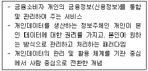
- 마이데이터
- BYOD(Bring Your Own Device)
- 개인 핀테크
- 디지털 전환
- 빅테크
(정답률: 44%)